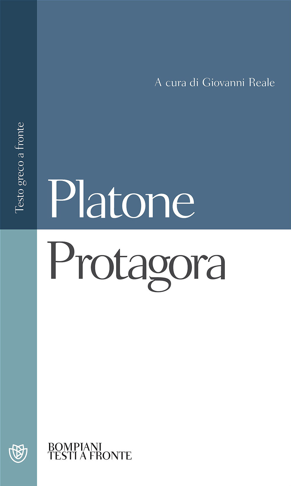
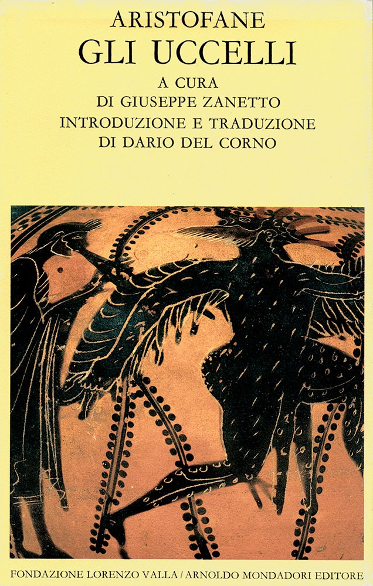

42:07 · 9 OPERE
Risposta a Mr Max ed alle contorsioni della modernità.
Il filo del discorso
Il relatore legge e commenta uno scambio con un interlocutore indicato come Mr Max, nato attorno a un precedente video sulla sofistica. La controversia riguarda assiomi, credenza, verità e interpretazione: dagli esempi delle mele, del triangolo e della Terra si passa all’opinione vera in Platone, al rapporto socratico fra sapere e agire e alla distinzione fra oggetti e rappresentazioni. Lo scambio richiama Otello, la rosa di Romeo e Giulietta, Wittgenstein e un frammento di Nietzsche; il riferimento a Nefelococcugia rinvia probabilmente agli Uccelli di Aristofane. Una digressione sui Pirahã mette in gioco il rapporto fra linguaggio numerico e capacità di confrontare quantità. La lettura diventa occasione per una critica della circolazione di citazioni staccate dal contesto e della certezza esibita senza argomenti. Il relatore riconosce anche il valore di leggere chi non si condivide e ammette che scegliere l’idea del Bene come esempio abbia complicato la discussione. Le note mantengono distinti le posizioni dei due interlocutori, i testi filosofici e le precisazioni necessarie su opinione vera, aritmetica modulare e ricerca sui Pirahã.
I libri nel discorso

Gli elementi
Copertina: Bompiani · Tutte le opere, raccolta contenente Gli elementi
La copertina illustra la raccolta Tutte le opere, che include Gli elementi; non è attribuita al video.
Gli Elementi di Euclide sono nominati nel confronto iniziale con dimostrazioni geometriche.
Passaggio 1:36 ↗ · Fonti e libro ↗Mark Felt: The Man Who Brought Down the White House
Immagine promozionale ufficiale del film: Immagine promozionale verticale Sony del film del 2017: Liam Neeson e Diane Lane, titolo inglese; non è una copertina libraria.
Materiale promozionale del distributore, con titolo e interpreti. Non è la copertina di un libro di Mark Felt né una fotografia del vero informatore. La grafica non certifica un supporto Blu-ray o DVD mostrato nel video.
Titolo inglese, Mark Felt e 2017 sono espliciti, con formula inglese leggermente deteriorata dalla trascrizione automatica.
Passaggio 4:05 ↗ · Fonti e libro ↗
Protagora
Identificazione probabile
Copertina: Bompiani · Testi a fronte · 2001 · a cura di Giovanni Reale
Immagine autentica dell’opera, controllata visivamente; l’edizione di riferimento non è attribuita al filmato.
Il relatore ricorda un video sulla sofistica e sul Protagora; il riferimento al dialogo è probabile ma il titolo può confondersi con il filosofo omonimo.
Passaggio 5:03 ↗ · Fonti e libro ↗
Otello
Copertina: Feltrinelli · Universale Economica I Classici · 2013 · traduzione di Agostino Lombardo
Immagine autentica dell’opera, controllata visivamente; l’edizione di riferimento non è attribuita al filmato.
Otello e Desdemona compaiono nel commento letto come esempio di verità narrativa.
Passaggio 5:39 ↗ · Fonti e libro ↗
Menone
Identificazione probabile
Copertina: Bompiani · Testi a fronte · 2000
Copertina autentica dell’edizione di riferimento, controllata visivamente. Non identifica l’esemplare letto o citato nel video.
Discussione della opinione vera o retta in testi platonici; Menone 97a–98a è il riscontro più preciso, ma il titolo non è pronunciato.
Passaggio 13:32 ↗ · Fonti e libro ↗
Romeo e Giulietta
Identificazione probabile
Copertina: BUR / Rizzoli, 2023; traduzione di Carmen Gallo
Copertina dell’edizione con testo inglese a fronte, introduzione, note e nuova traduzione di Carmen Gallo. Edizione scelta come riferimento iconografico; nessuna edizione è confermata nel video. L’identificazione dell’opera nel video resta probabile.
Allusione alla rosa che conserva il profumo pur cambiando nome; riferimento probabile a II.2, senza titolo esplicito.
Passaggio 34:05 ↗ · Fonti e libro ↗
Tractatus logico-philosophicus
Identificazione probabile
Copertina del volume che comprende il Tractatus: Einaudi · Tractatus logico-philosophicus e Quaderni 1914–1916 · 2009
Copertina del volume Einaudi che comprende sia il Tractatus sia i Quaderni 1914–1916. La voce identifica il Tractatus; l’ISBN appartiene al volume contenitore e l’edizione non è accertata nel filmato.
La frase sui limiti del linguaggio e del mondo richiama la proposizione 5.6, senza titolo esplicito.
Passaggio 36:48 ↗ · Fonti e libro ↗
Frammento postumo 7[60], fine 1886–primavera 1887
Identificazione probabile
Copertina della raccolta contenente il frammento: Copertina della raccolta Frammenti postumi 1885–1887, Adelphi, Opere volume VIII, tomo I, edizione italiana sul testo critico Colli e Montinari; traduzione Sossio Giametta, prima edizione 1975.
Copertina autentica Adelphi bianca: autore, intervallo cronologico, volume e curatori leggibili. Non è un’edizione autonoma del frammento né una copia identificata nel filmato. Il sito attuale e il catalogo storico riportano paginazioni diverse: non vengono mescolate per attribuire una precisa ristampa alla fotografia.
La formula sui fatti e le interpretazioni richiama probabilmente il frammento 7[60]; il commento non ne fornisce autore, numerazione o citazione completa.
Passaggio 37:41 ↗ · Fonti e libro ↗
Gli uccelli
Identificazione probabile
Copertina: Copertina Fondazione Lorenzo Valla / Arnoldo Mondadori Editore, scheda datata 2005, 408 pagine; cura Giuseppe Zanetto, introduzione e traduzione Dario Del Corno.
Copertina autentica gialla con illustrazione vascolare, titolo, autore e curatori. La data della scheda editoriale non certifica la tiratura dell’esemplare nel video, che non è stata identificata.
Nefelococcugia e Aristofane sono riconoscibili nella trascrizione automatica; la città rinvia agli Uccelli, non alle Nuvole.
Passaggio 38:33 ↗ · Fonti e libro ↗